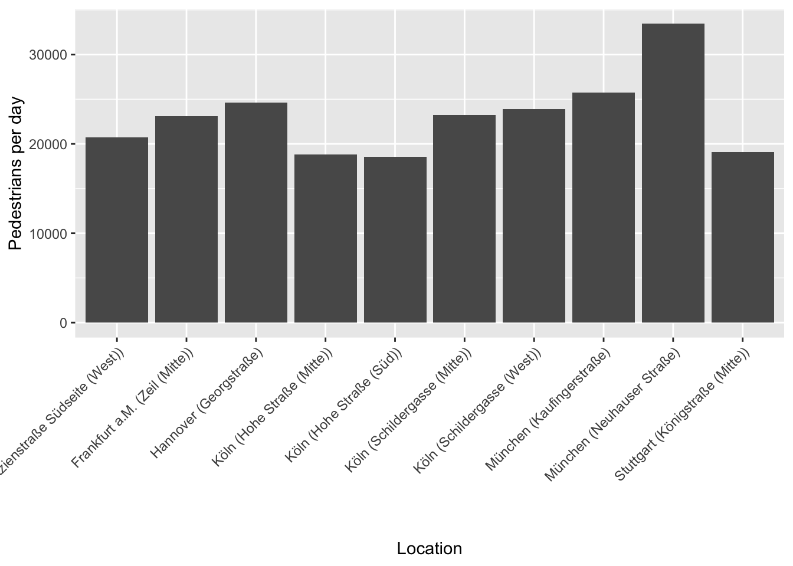

Introduction
hystreet is a company that collects data on pedestrian traffic in shopping streets of different German cities. After registering you can access and download the data via their website.
Installation
The package is now on CRAN. The easiest way to download is via:
install.packages("hystReet")You can install the development version from GitHub with the following command:
if (!require("devtools"))
install.packages("devtools")
devtools::install_github("JohannesFriedrich/hystReet")API Keys
To use this package, you will first need to get a hystreet API key. To do so, you first need to set up an account on https://hystreet.com/. After that you can request an API key via e-mail. Once your request has been granted, you will find you key in your hystreet account profile.
Now you have three options:
- Once you have your key, you can save it as an environment variable for the current session by running the following command:
Sys.setenv(HYSTREET_API_TOKEN = "PASTE YOUR API TOKEN HERE")- Alternatively, you can set it permanently with the help of
usethis::edit_r_environ()by adding the following line to your.Renviron:
HYSTREET_API_TOKEN = PASTE YOUR API TOKEN HERE- If you don’t want to save your API token here, you can enter it for each function of this package using the
API_tokenparameter.
Usage
| Function name | Description | Example |
|---|---|---|
| get_hystreet_stats() | request common statistics about the hystreet project | get_hystreet_stats() |
| get_hystreet_locations() | request all available locations | get_hystreet_locations() |
| get_hystreet_station_data() | request data from a stations | get_hystreet_station_data(71) |
| set_hystreet_token() | set your API token | set_hystreet_token(123456789) |
Load some statistics
The function get_hystreet_stats() summarises the number of available stations and the sum of all counted pedestrians.
library(hystReet)
## Loading required package: httr
## Loading required package: jsonlite
##
## Attaching package: 'jsonlite'
## The following object is masked from 'package:purrr':
##
## flatten
stats <- get_hystreet_stats()
stats| stations | today_count |
|---|---|
| 154 | 38869 |
Request all stations
The function get_hystreet_locations() generates a data frame with all available stations of the project.
locations <- get_hystreet_locations()
locations| id | name | city |
|---|---|---|
| 85 | Am Brand | Mainz |
| 127 | Poststraße | Braunschweig |
| 300 | Grimmaische Straße | Leipzig |
| 306 | Mariahilfer Straße (Mitte) | Wien |
| 88 | Breite Gasse | Nürnberg |
| 256 | Kirchgasse (Nord) | Wiesbaden |
| 311 | Platzgasse (Süd) | Ulm |
| 255 | Simeonstraße | Trier |
| 64 | Große Packhofstraße | Hannover |
| 108 | Große Straße (Mitte) | Osnabrück |
Request data from a specific station
The (probably) most interesting function is get_hystreet_station_data(). Using the hystreetID it is possible to request a specific station. By default, all the data from the current day are received. With the query argument it is possible to define the time and sampling frame of the data more precisely: from: datetime of earliest measurement (default: today 00:00:00:): e.g. “2018-10-01 12:00:00” or “2018-10-01” to : datetime of latest measurement (default: today 23:59:59): e.g. “2018-12-01 12:00:00” or “2018-12-01” resoution: Resolution for the measurement (default: hour): “day”, “hour”, “month”, “week”
data <- get_hystreet_station_data(
hystreetId = 71,
query = list(from = "2018-12-01", to = "2018-12-31", resolution = "day"))Some ideas for visualising the data
Let´s see if we can find the busiest days in December 2018. Saturdays were probably quite busy, while there should have been substantially less pedestrian traffic on the 24th and 25th of December, both of which are holidays in Germany.
data <- get_hystreet_station_data(
hystreetId = 71,
query = list(from = "2018-12-01", to = "2019-01-01", resolution = "hour"))
ggplot(data$measurements, aes(x = timestamp, y = pedestrians_count, colour = weekdays(timestamp))) +
geom_path(group = 1) +
scale_x_datetime(date_breaks = "7 days", labels = date_format("%d.%m.%Y")) +
labs(x = "Date",
y = "Pedestrians",
colour = "Day")
Compare different stations
Now let´s compare data from different stations:
- Load the data
data_73 <- get_hystreet_station_data(
hystreetId = 73,
query = list(from = "2019-01-01", to = "2019-01-31", resolution = "day"))$measurements %>%
select(pedestrians_count, timestamp) %>%
mutate(station = 73)
data_74 <- get_hystreet_station_data(
hystreetId = 74,
query = list(from = "2019-01-01", to = "2019-01-31", resolution = "day"))$measurements %>%
select(pedestrians_count, timestamp) %>%
mutate(station = 74)
data_73_74 <- bind_rows(data_73, data_74)
ggplot(data_73_74, aes(x = timestamp, y = pedestrians_count, fill = weekdays(timestamp))) +
geom_bar(stat = "identity") +
scale_x_datetime(labels = date_format("%d.%m.%Y")) +
facet_wrap(~station, scales = "free_y") +
theme(legend.position = "bottom",
axis.text.x = element_text(angle = 45, hjust = 1))Highest ratio (pedestrians/day)
Now a little bit of big data analysis. Let´s find the station with the highest pedestrians per day ratio:
hystreet_ids <- get_hystreet_locations()
all_data <- lapply(hystreet_ids[,"id"], function(ID){
temp <- get_hystreet_station_data(
hystreetId = ID,
query = list(from = "2019-01-01", to = "2019-12-31", resolution = "day"))
lifetime_count <- temp$statistics$timerange_count
days_counted <- as.numeric(temp$metadata$latest_measurement_at - temp$metadata$earliest_measurement_at)
return(data.frame(
id = ID,
station = paste0(temp$city, " (",temp$name,")"),
ratio = lifetime_count/days_counted))
})
ratio <- bind_rows(all_data)Which stations have the highest ratio?
ratio %>%
top_n(5, ratio) %>%
arrange(desc(ratio))
## id station ratio
## 1 73 München (Neuhauser Straße) 26466.29
## 2 63 Hannover (Georgstraße) 19491.42
## 3 47 Köln (Schildergasse (West)) 18873.99
## 4 165 München (Kaufingerstraße) 16631.00
## 5 159 Köln (Schildergasse (Mitte)) 15688.65Now let´s visualise the top 10 locations:
ggplot(ratio %>%
top_n(10,ratio), aes(station, ratio)) +
geom_bar(stat = "identity") +
labs(x = "Location",
y = "Pedestrians per day") +
theme(legend.position = "bottom",
axis.text.x = element_text(angle = 45, hjust = 1))
Corona effects
The Hystreet-API is a great source of analysing the social effects of the Corona pandemic in 2020. Let´s collect all german stations since March 2020 and analyse the pedestrian count until 10th June 2020.
data <- lapply(hystreet_ids[,"id"], function(ID){
temp <- get_hystreet_station_data(
hystreetId = ID,
query = list(from = "2020-03-01", to = "2020-06-10", resolution = "day")
)
return(data.frame(
name = temp$name,
city = temp$city,
timestamp = format(as.POSIXct(temp$measurements$timestamp), "%Y-%m-%d"),
pedestrians_count = temp$measurements$pedestrians_count,
legend = paste(temp$city, temp$name, sep = " - ")
))
})
data_all <- bind_rows(data)
data_all %>%
ggplot(aes(ymd(timestamp), pedestrians_count, colour = legend)) +
geom_line(alpha = 0.2) +
scale_x_date(labels = date_format("%d.%m.%Y"),
breaks = date_breaks("7 days")
) +
theme(legend.position = "none",
legend.title = element_text("Legende"),
axis.text.x = element_text(angle = 45, hjust = 1)) +
labs(x = "Date",
y = "Persons/Day")